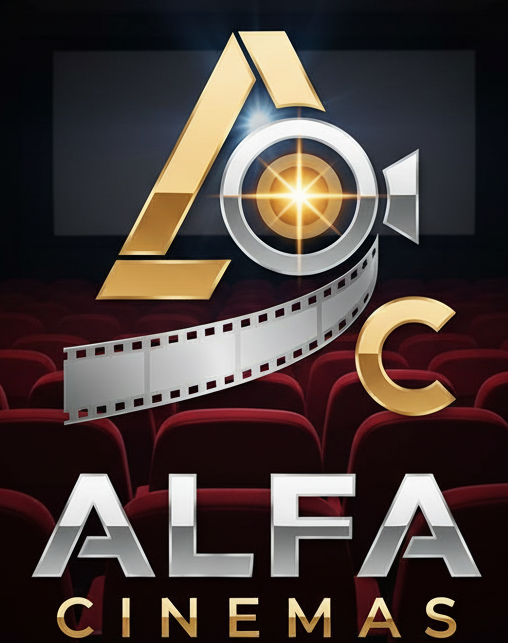

O que aprendi sobre lógica de programação
Lógica é o ponto de partida para transformar problemas em passos claros, testáveis e possíveis de melhorar.
Ler postPortfólio pessoal com blog
Aqui reúno meus projetos, aprendizados de lógica de programação, anotações do curso e formas de contato profissional.
Blog
Três textos sobre aprendizados do semestre, ferramentas e primeiros passos em desenvolvimento web.
Lógica é o ponto de partida para transformar problemas em passos claros, testáveis e possíveis de melhorar.
Ler postUma boa estrutura de pastas facilita manutenção, publicação e entendimento do projeto por outras pessoas.
Ler postCada tecnologia tem uma função: estruturar, apresentar e criar interação com o visitante.
Ler postProjetos
Projetos organizados por disciplina, objetivo e tecnologias usadas.
Aplicação simples para receber notas, calcular média final e indicar a situação do aluno.
Página estática criada para praticar estrutura HTML, CSS, JavaScript, organização de arquivos e publicação local.

Landing page do Alfa Cinemas com carrossel de destaques, grade de filmes, modais de sinopse, trailer e compra simulada de ingressos.